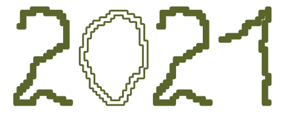
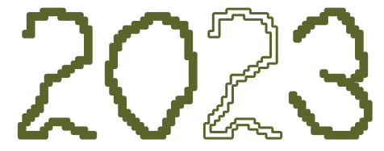
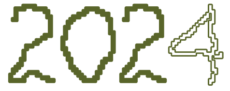

Primera Edición

En 2020 empezó a gestarse la idea a partir de un trabajo de final de grado en el contexto de la pandemia, que proponía unas jornadas de desintoxicación digital en torno al Land Art. Esta idea, impulsada por Abril Porta, se compartió dentro de la comunidad creativa Panerolas, donde también formaba parte Chango. Él le propuso unir la propuesta a su campo de trabajo, las instalaciones lumínicas. De esta forma, en 2021 se llevó a cabo el primer encuentro en un paraje de situado en Saldes (Catalunya) solo entre amigos y sin programación cerrada.

Tercera Edicion


En 2023, Abril Porta y Lara Campos se vieron en la necesidad de cambiar de ubicación, lo que llevó a la activación del proyecto en la masía Casa Castel, que tuvo que ser acondicionada para poder acoger el festival. Con este nuevo contexto, el encuentro dio un salto hacia una programación más definida, estructurada en las líneas Land y Light. Fue también el momento en que el festival se amplió de tres a cuatro días, pasando a celebrarse de jueves a domingo, e incorporando los primeros talleres: Videomapping, técnicas de intervención en Land Art, creación audiovisual analógica mediante el Quimigrama, un taller de experimentación lumínica y una nueva edición de la actividad de percepción a ciegas.

Cuarta Edición

Tras el éxito de 2023, Abril Porta y Lara Campos decidieron ampliar el encuentro a una semana completa. Este cambio supuso un gran salto en el desarrollo del proyecto, consolidando el formato actual del festival. Durante esta edición se llevaron a cabo numerosos talleres y procesos: creación de visuales con cámara microscópica, una exploración del maquillaje natural en la creación de criaturas, un espacio de bioconstrucción con cañas, escritura y poesía situada tanto manual como a máquina de escribir, un taller de experimentación lumínica con elementos naturales y artificiales del entorno, un collage terrenal y una nueva activación de percepción del territorio a ciegas.